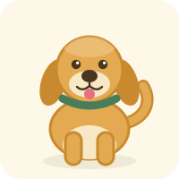

Dog Encyclopedia
Beagle
- Size: Small, about 10–12 kg and 33–40 cm tall.
- Personality: Curious, cheerful and led by its nose. Friendly with people, quite stubborn when training.
- Everyday care: Two short walks with time to sniff, a brush once a week, and measured meals so it does not gain weight.

Golden Retriever
- Size: Large, about 25–34 kg and 51–61 cm tall.
- Personality: Gentle, patient and eager to please, which makes it a popular family dog.
- Everyday care: One long walk or a swim each day, brushing two or three times a week, and company most of the day.
Poodle
- Size: Toy, Miniature and Standard varieties, from about 3 kg up to 30 kg.
- Personality: Clever, alert and playful. Learns tricks quickly and dislikes being bored.
- Everyday care: A daily walk plus a short training game, brushing several times a week, and a coat trim every six to eight weeks.